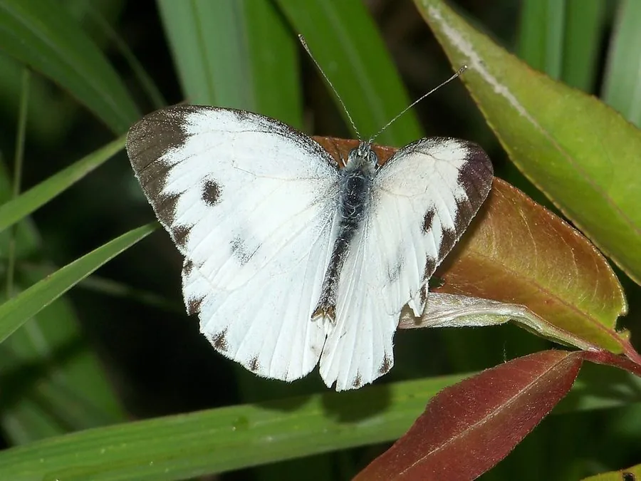

昆虫 · 动物界
东方菜粉蝶 Pieris canidia

翅面白色、前翅顶角黑斑明显的粉蝶，中国南方常见，一年多代，幼虫取食芥菜、白菜等十字花科蔬菜。
- 分类
- 门节肢动物门纲昆虫纲目鳞翅目科粉蝶科属粉蝶属
- 栖息环境
- 平原至低山的农田、菜地、村落和灌丛
- 地理分布
- 中国长江以南各地，以及印度、缅甸、越南、老挝和泰国
- 保护级别
- 尚无保护级别；为南方蔬菜上的常见害虫，以农业防治为主
物种志
东方菜粉蝶的翅展约五厘米，翅面白色，前翅顶角有一个三角形的黑斑，黑斑在雄蝶中较小、在雌蝶中较大，后翅反面淡黄色，翅脉灰黑。它与菜粉蝶十分相似，区别在于后翅反面的黄色调更明显、前翅黑斑的形状略有不同，以及翅基部的灰黑色鳞粉较少。它的身体灰黑，被白色绒毛，触角呈棒状，末端膨大。
它分布于中国长江以南各地，以及印度、缅甸、越南、老挝和泰国，栖息在平原至低山的农田、菜地、村落和灌丛，常在萝卜、芥菜等蔬菜和野花上访蜜。幼虫以芥菜、白菜、油菜等十字花科植物为食，雌蝶把卵单产在叶片背面，幼虫孵化后啃食叶片，留下孔洞，化蛹于茎叶上，一年可发生五至八代，以蛹越冬，是南方蔬菜上的常见害虫。目前主要靠农业防治控制，尚无保护级别。
形态与习性
- 翅展约五厘米，翅面白色
- 前翅顶角有三角形黑斑，雌蝶更大
- 食性幼虫取食芥菜、白菜、油菜等十字花科蔬菜
- 危害幼虫啃叶留孔洞，是南方菜地常见害虫
- 发生世代一年五至八代，以蛹越冬
- 习性成虫在菜花和野花上访蜜
趣味知识
- 它和菜粉蝶长得几乎一样，靠后翅反面的黄色调和黑斑形状区分。
- 雌蝶把卵一粒粒产在菜叶背面，幼虫孵化后就把叶片啃出许多洞。
- 南方菜地一年多代重叠，防治时要同时盯着卵、幼虫和蛹。